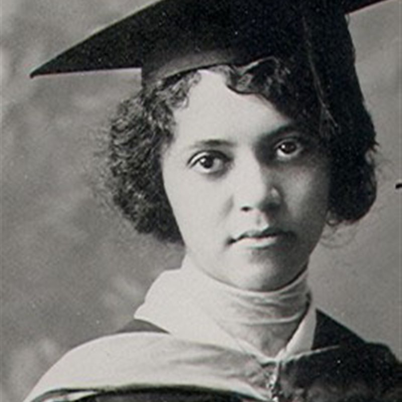
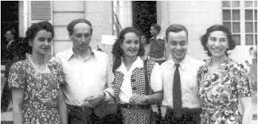

Rosalind Franklin nacque a Londra in una famiglia benestante di origine ebraica. Fin da giovane mostrò una forte inclinazione per le scienze.
Studiò a Cambridge laureandosi in chimica e fisica. Dopo la guerra lavorò a Parigi specializzandosi nella diffrazione ai raggi X.
Al King’s College realizzò immagini fondamentali del DNA che permisero di comprendere la doppia elica. I suoi dati furono usati senza consenso da Watson e Crick.
Morì nel 1958. Oggi è riconosciuta come una figura chiave della biologia molecolare.

